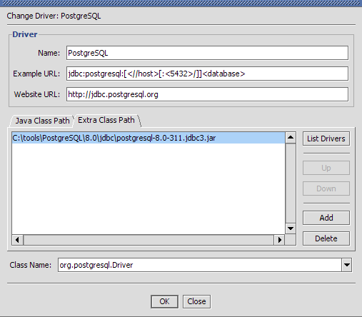
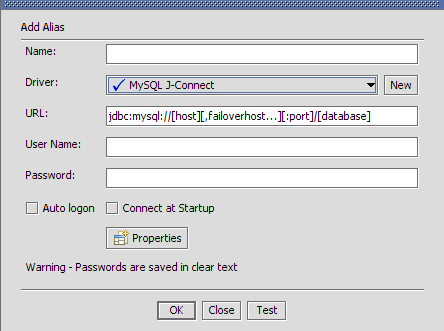
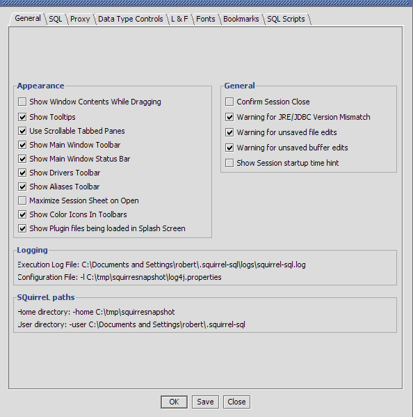
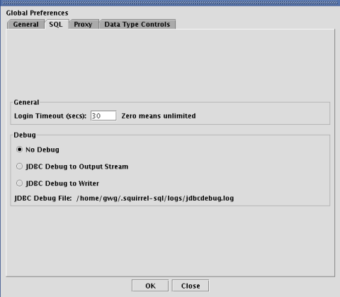
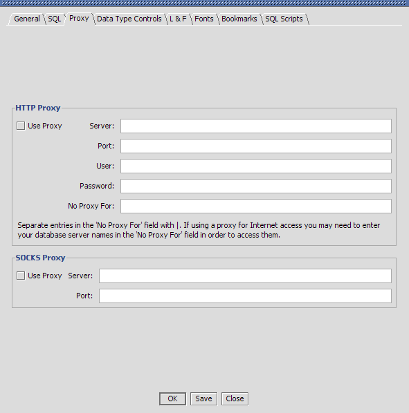
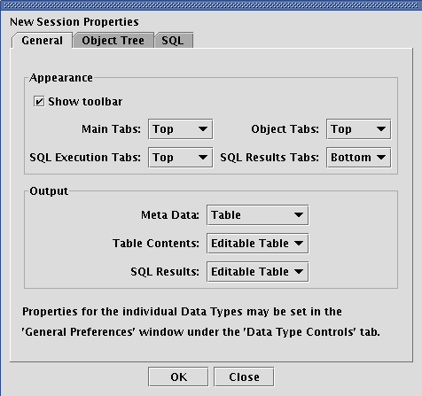
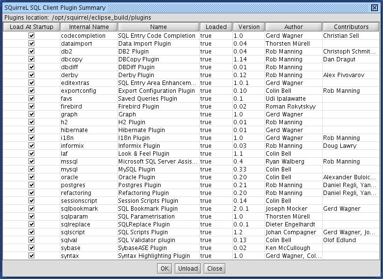

|
|
SQL Client Help File |
SQuirreL SQL Client is a graphical Java program that will allow you to view the structure of a JDBC compliant database, browse the data in tables, issue SQL commands etc. You need to be running at least version 1.3 of Java. Some people have had problems with Java 1.3.0 so it is recommended that you use at least Java 1.3.1. Java 1.4 is preferred. See the Old Versions page for SQuirreL downloads that will work with older versions of Java.
It is free software, and you are welcome to redistribute it under the terms of the GNU Lesser General Public License.
The installer has been created using the IzPack Java Installer. Download the file squirrel-sql-<version>-install.jar and execute it with the command:
java -jar squirrel-sql-<version>-install.jar
On some operating systems (currently Windows NT, 2000 and XP) a shortcut will be created in the menu system. For Windows the file squirrel-sql.bat will run the application. For Unix the file is squirrel-sql.sh. The squirrel-sql.jar file is executable so on those operating systems that support it you can run SQuirrel by double clicking squirrel-sql.jar. You can also run it by issuing the following command:
java -jar squirrel-sql.jar
Just remember that when executing the jar file directly you don't use your current class path ($CLASSPATH on Unix or %CLASSPATH% on Windows) so if you have your JDBC drivers in your class path then SQuirreL won't see them. See The Driver for more information.
Some people have reported core dumps with the Sun JDK1.3.1 running under Linux. If this happens passing the -classic flag to the java executable appears to fix the problem. No similar problems have been reported with any other JDK on Linux.
The behaviour of SQuirreL can be changed by passing various arguments to it.
TODO: Specify default behaviour
The command line option -nosplash can be passed to the main class in order to start SQuirreL without the splash screen appearing. E.G.
java net.sourceforge.squirrel_sql.client.Main -nosplash
The command line option -noplugins can be passed to the main class in order to start SQuirreL without loading any of the plugins.
java net.sourceforge.squirrel_sql.client.Main -noplugins
The user settings directory can be overridden by the -settingsDir option. E.G.
java net.sourceforge.squirrel_sql.client.Main -settingsDir=c:\my-squirrel-settings
The configuration file for log4j is specified by the loggingConfigFile argument. E.G.
java net.sourceforge.squirrel_sql.client.Main -loggingConfigFile=c:\config.properties
The application directory is specified by the squirrelHome argument. This tells SQuirreL where to look for plugins etc. This should be the directory that you installed SQuirreL into. E.G.
java net.sourceforge.squirrel_sql.client.Main -squirrelHome=$SQUIRREL_SQL_HOME
To return to the standard theme for the metal Look and Feel pass the -usedefaultmetaltheme argument. E.G.
java net.sourceforge.squirrel_sql.client.Main -usedefaultmetaltheme
To use the native Look and Feel rather than the Java one pass the -useNativeLAF argument. E.G.
java net.sourceforge.squirrel_sql.client.Main -useNativeLAF
A number of default driver definitions ship with SQuirreL. These are added to the Drivers List window (View Drivers option on the Windows menu) when you first start up SQuirreL.

The
 icon next to a driver definition indicates that it has been successfully
loaded while the
icon next to a driver definition indicates that it has been successfully
loaded while the  icon indicates that the JDBC driver could not be
loaded and so cannot be used to connect to a database.
icon indicates that the JDBC driver could not be
loaded and so cannot be used to connect to a database.
All of the default driver definitions assume that the JDBC driver classes are in the current class path or in your JRE extensions directory (consult the documentation for your Java implementation for more information on this). If this is not the case you will need to modify the driver definition to point to the jar file or the classes directory that contains these classes.
You can create new driver definitions using the New Driver option on the Drivers menu.

This is an example of a driver definition. This dialog can be displayed by selecting a driver definition in the Drivers List window and then selecting the Modify Driver option from the Drivers menu.
The Name text field specifies an easy to remember name for the database driver definition and is the text shown in the Drivers List window.
The Example URL shows an example URL for this driver. This can be found in the documentation that comes with the driver. This is only an example URL, the actual URL is defined in the alias.
The entries in the Java Class path tab show the directories and jars in the current class path. If you click on a jar file and press the List Drivers button then the class names of all the JDBC drivers in that jar will be placed in the Class Name dropdown control.
The Class Name specifies the class name of the JDBC driver. Either select an existing entry in the dropdown or key in the class name of the JDBC driver (it can normally be found in the documentation that comes with the driver).
The Extra Class Path tab allows you to select a JDBC driver that is in a jar file or a directory that is not in the current class path.

The Add button will display a File Open dialog allowing you to select one or more jar files or directories. The Delete button allows you to remove a jar file or directory from the list. The Up and Down buttons allow you to change the sequence of the entries. The List Drivers button will place the class names of all the JDBC drivers in the currently selected jar file into the Class Name dropdown.
Press the OK button to save the driver definition and close the window or the Close button to close the window without saving any changes.
Now you need to create an alias to your database.
Display the Aliases List window (View Aliases option on the Windows menu). When you run SQuirreL for the first time this window will be empty.

Take the New Alias option from the Aliases menu and the following dialog will be displayed.

Enter an easy to remember name in the Name field for this database URL. This is the text that will be displayed in the Aliases List Window.
Select the driver for this alias from the Driver dropdown or click on the New button to create a new driver definition.
Change the URL to point to your database.
Optionally enter a user name if you want the alias to default to a specific user.
The Test button will allow you to attempt to connect to your alias to ensure that the parameters you have entered are correct.
Press the OK button to save the alias definition and close the window or the Close button to close the window without saving any changes.
The new alias should now appear in the Connect To dropdown. Select it in the dropdown and enter your user name and password in the connection dialog, press OK and you should be connected.
When you first connect to a database a Session window will be shown.

The Object Tree on the left shows the structure of the database. Clicking on various nodes within this object tree will show further information in the right hand detail panel. In this example the database metadata is shown. Clicking on the title of a column will sort the display by the data in that column. This is true of all tabular displays in SQuirreL.

This shows the data displayed when a table is selected in the Object Tree.
SQL can be executed from the SQL tab in the window that opens once you have connected to an alias. Multiple statements can be executed and the results will be displayed in multiple tabs below the SQL entry area.
When the SQL tab is selected pressing <ctrl><enter>, taking the Execute SQL option from the Session menu or pressing the Execute SQL button in the session window tool bar will execute the entered SQL.
If a single statement is entered then pressing <ctrl><enter> will execute just that statement.
If you only want to execute part of the SQL entered then highlight the SQL that you want to execute and press <ctrl><enter>.
To only execute a single statement amongst several statements (separated from the other statements by at least one blank line) within the SQL entry area then click on the line containing the statement that you want to execute and press <ctrl><enter>.
The characters -- at the beginning of a line will turn it into a comment.

As can be seen in the above screen shot, double clicking in a cell in the query results will open up a new window showing the entire contents of the cell.
The  icon on the tabbed folder
containing the SQL results allow you to "tear off" the query
results from the tabbed folder and display it in its own window.
icon on the tabbed folder
containing the SQL results allow you to "tear off" the query
results from the tabbed folder and display it in its own window.

SQuirreL allows you to easily change the data in a table. Data may be changed just by typing the new values when you are viewing the table in the Contents tab under the Objects view.
When initially set up, the Contents Tab may be set in a read-only mode. This is a safety precaution. Once a table is made editable, any change that you make is made immediately in the database. While extremely convenient, this is dangerous. With this capability enabled, it becomes very easy to accidentally destroy data, violate some consistancy checks, mis-direct references between tables, etc. On the other hand, the author of this feature runs with editing always enabled. It is simpler that way, but has the potential for disaster. You have been warned!
You can set SQuirreL so that tables are editable all the time, or you can enable editing on a specific table as you are working on it. Either option may be set as your default mode of operation, and either option may be selected for use on a specific table.
Editing may only be done in the Object view, not on the results of manually entered SQL queries run under the SQL view. At this time the only data that may be edited is the Contents tab of individual tables.
To set the default format for the Contents Tab for new sessions take the New Session Properties option from the File and click on the General tab. The Table Contents dropdown list gives three options for the format of the Comtemts Tab:
After you have connected with a database, you may change the default model for the data in the Contents tab by the Session Properties option from the Session and clicking on the General tab and changing the selection for Table Contents.
Here is how to edit data in the table:
If the data in the cell gets really messed up and you are confused about
what is going on, press the
If the cell contains a NULL value, that is shown as the string "<null>". To change that to a non-null value, just type the new data. When you enter the first character of the data, the "<null>" will be replaced by that character.
To change the value of a nullable cell to NULL, just delete all of the data in that cell. When you delete all of the data in a cell, the contents of the cell will be set to "<null>". Since the VARCHAR data types allow a non-null empty string, for those cells you must delete all of the data so that the cell is blank, and then press delete. The VARCHAR cell will then be set to <null>.
If a cell is not nullable, deleting the last character in the cell will leave the cell blank. You may then enter new data for the cell.
To restore the cell to its original value, delete all of the data in the cell, then press the delete key one more time. This will cause the cell to be reset to its original value. For cells that allow nulls, continually pressing the delete key causes a cycle:
original data -> delete data -> <null> -> original data
and for cells that do not allow nulls:
original data -> delete data -> blank cell -> original data
Thus, if you mess up the contents of a cell, just press the delete key until you see the original data reappear.
When leaving the cell, if the cell data is identical to the original contents of the cell, the DB will not be updated.
Editing only works for JDBC types of INTEGER, SMALLINT, TINYINT, CHAR, VARCHAR, LONGCHAR and JDBC codes -8 and -9. It has not been tested with TINYINT, LONGCHAR or types -8 and -9. Other types will be included in the future.
Some attempt has been made to validate user input for each of the types. For example, INTEGER fields allow only digits and '-' as input. However, not all of the necessary information is supplied by all DBMSs, so we cannot do a complete validation of user input in all cases. For example, we cannot check that a value entered for a SMALLINT field will fit into a SMALLINT column in this DBMS. The "validation of last resort" is done when we try to do an update on the DB. The DBMS either succeeds or it fails, and if there is an error we display that message to the user with the information that the DB has not been updated.
VARCHAR fields cannot include tab or newline. VARCHAR fields that may be set to null cannot be set to the string value "<null> " without the quotes. VARCHAR fields in the database may include those values as long as you do not try to edit them.
If you have the "Show String Data" function disabled for any data type (e.g. the table shows "<BINARY>" rather than the actual data), you may not be able to make changes in tables using that data type. This has not been tested, so we don't know if it will work or not.
The pop-up window that is created when you double-click on a cell is not editable. We hope to make it editable in the future.
The DB updates are based on the assumption that the list of DB column names and their values for the current row are unique, or if they are not unique, that all of the rows with those values are to be updated in the DB. For example, if you have a database with columns a, b, and c, and in a particular row you have the values
a=34 b='your name' c=55
and you change column c to be 66, then SQuirreL does the following:
update <table> set c=66 where a=34 and b='your name' and c=55
To help distinguish rows that are similar to each other, any DBMS that provides a pseudo-column to uniquely identify each row (such as Oracle's ROWID) has that pseudo-column included in all querys.
The problem with this is that some columns cannot be handled in this way, most notably BLOBs and CLOBs. Thus, if your table contains BLOB or CLOB columns, SQuirreL may think that rows are identical because all of the non-BLOB/CLOB fields are identical, but the rows are actually not the same because the contents of the BLOB/CLOB fields differ. This could lead to "erroneous" warning messages.
This is a quick description of how SQuirreL handles various data types when displaying the results of SQL statements. SQuirreL uses the column type (ResultSetMetaData.getColumnType(...)) from the metadata for the result set to determine how to display the column.
Global Preferences specify configuration settings for the application.

Show Window Contents While Dragging - If checked this shows the contents of windows as they are being dragged. If unchecked only the outline of the window will be shown. Uncheck for a speed improvement on slow machines.
Show Tooltips - If checked then tooltips (or hints) will be shown when the mouse "hovers" over some controls.
Use Scrollable Tabbed Panes - When running version 1.4 or above of Java selecting this checkbox will display the tabs in tabbed folders in a scrollable region rather than wrapping them when all tabs will not fit within a single run.
Show Main Window Tool Bar - If checked then the tool bar will be displayed in the main window.
Show Main Window Status Bar - If checked then the status bar will be displayed in the main window.
Show Drivers Tool Bar - If checked then the tool bar will be displayed in the Aliases Window.
Show Aliases Tool Bar - If checked then the tool bar will be displayed in the Aliases Window.
Execution Log File - This (display only) setting tells you the name (and location) of the logging file for SQuirreL. If the file name is too long for the label then the full name will be displayed in a tooltip.
For more information see Logs.Configuration File - This (display only) setting tells you the name (and location) of the logging configuration file for SQuirreL. If the file name is too long for the label then the full name will be displayed in a tooltip.
For more information see Logs.
Login Timeout - Sets the maximum time in seconds that a JDBC driver will wait while attempting to connect to the database.
JDBC Debug - If checked tells the JDBC drivers to write debugging information to the JDBC Debug File. Depending on the JDBC driver you are using this may generate a lot of output and significantly slow down SQuirreL.
JDBC Debug File - If JDBC Debug is checked then this (display only) setting is the file that the debug information will be written out to. If the file name is too long for the label then the full name will be displayed in a tooltip.

Use Proxy - If checked then a HTTP proxy server will be used for connecting to servers.
Server - The name (or IP address) of your proxy server.
Port - The port number to use on the proxy server.
User - The user name to use to log onto the proxy server.
Password - The password to use to log onto the proxy server.
No Proxy For - A list of servers (separated by |) that do not need to be accessed through your proxy server.
Use Proxy - If checked then a SOCKS proxy server will be used for connecting to servers.
Server - The name (or IP address) of your proxy server.
Port - The port number to use on the proxy server.
The "New Session Properties" dialog allows you to specify settings for future session. To change the settings for existing sessions use the "Session Properties" menu option.

Show Tool Bar - If checked then display a toolbar on the session window.
Meta Data - Specify the output type for meta data displays.
SQL Results - Specify the output type for SQL result displays.
Font - The Font button allows you to specify the font to be used in the SQL entry area.

Auto Commit - If checked then all SQL will be automatically committed after it is executed. If unchecked then you will be able to use the "Commit" and "Rollback" options on the "Session" menu.
Commit on Closing Session - If "Auto Commit" is not checked then this option controls whether or not a "Commit" is issued prior to closing a session. If this option is not checked then you will lose all uncommitted work when the session is closed. Only applicable if "Auto Commit" is not checked.
Show Row Count for Tables - Show the number of rows for each table in the object tree. This will slow down the building of the object tree.
Contents - Limit Rows/Number of Rows - If Contents - Limit rows is checked then only the number of rows specified in the Number of rows will be displayed in the Contents tab for a table.
SQL - Limit Rows/Number of Rows - If SQL - Limit rows is checked then only the number of rows specified in the Number of rows will be displayed for an SQL query.
Statement Separator - The character used to separate SQL statements in the SQL entry area.
Start of Line Comment - The character that specifies that the line in the SQL entry area is a comment and should not be passed to the database for execution.
Binary - If checked then binary columns will be displayed.
VarBinary - If checked then varbinary columns will be displayed.
LongVarBinary - If checked then longvarbinary columns will be displayed.
SQL Other - If checked then java.SQuirreLl.Types.Other columns will be displayed.
Blob - If checked then blob columns will be displayed. You can specify the number of bytes to read or all.
Clob - If checked then clob columns will be displayed. You can specify the number of characters to read or all.
All Other Data Types - If checked then all other columns will be displayed.
A plugin is an application written in Java that runs within SQuirreL. This allows developers to enhance the functionality of SQuirreL without having to rebuild the SQuirreL application itself. It also allows you to "pick and choose" the functionality that you want in SQuirreL. For instance if you don't use Oracle then you don't need the Oracle specific functionality supplied by the Oracle plugin.
Plugins can be downloaded from the SQuirreL web site http://squirrel-sql.sf.net
To install a plugin unpack the zip or gz file into the plugins directory within the SQuirreL application directory keeping the directory structure. To use the plugin you will need to restart SQuirreL.
The "Summary" option on the "Plugins" menu will display a dialog box showing the plugins currently installed.

select * from table1 where entered_date = {d'2002-12-01'}
and take this option then the following will be appended to the
SQL entry area.
select * from table1 where entered_date = TO_DATE ('2002-12-01', 'YYYY-MM-DD')